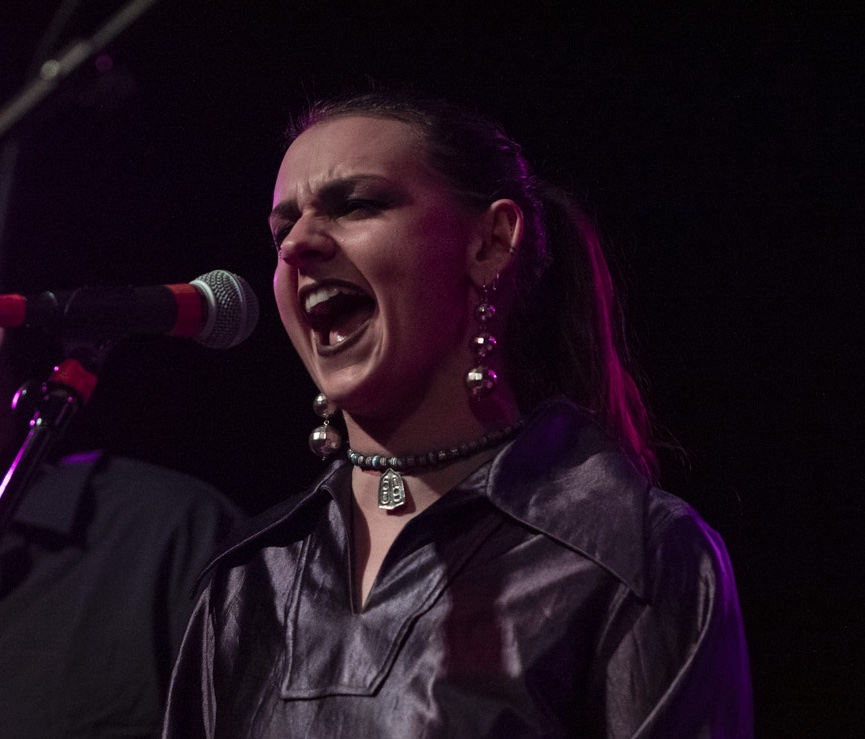
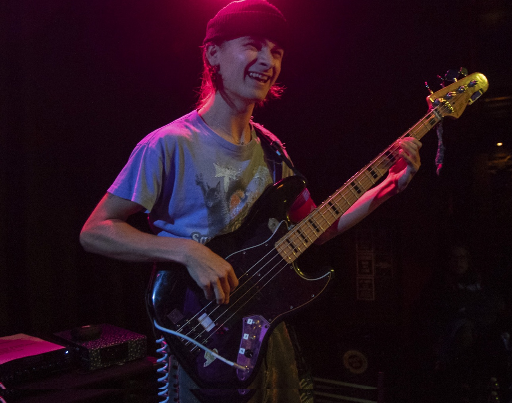
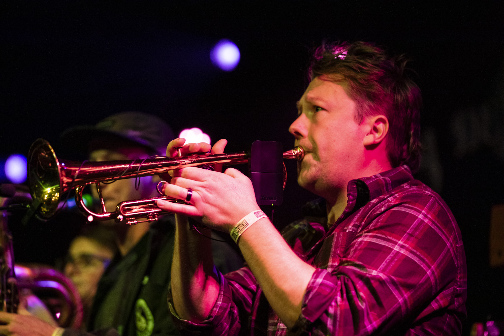

Biography
Litty deBungus is a 6-8 piece Funk ensemble from Oakland, CA - first formed in 2018. Litty D inspires people of all kinds to move their bodies and their minds. With bass-driven rhythms, powerful horn section, searing guitar solos, and soulful vocals - the party never stops!
With influences ranging from Tower of Power to Lettuce, and Pink Floyd to the California Honeydrops - Litty Debungus blends classic funk style with psychedelic rock & roll. Litty deBungus released their eponymous album on all platforms and are in the process of writing their second album!
Band Members
Stefan Turkowski - Guitar and Vocals
Noah Stid - Guitar and Vocals
Trianna Feruza - Vocals

Evan Angelico - Drums and Vocals
Noah Mogor - Bass

Micah Marmorstein - Trumpet and Vocals

Evan Levy - Saxophone and Flute
Dan Brown - Trumpet
